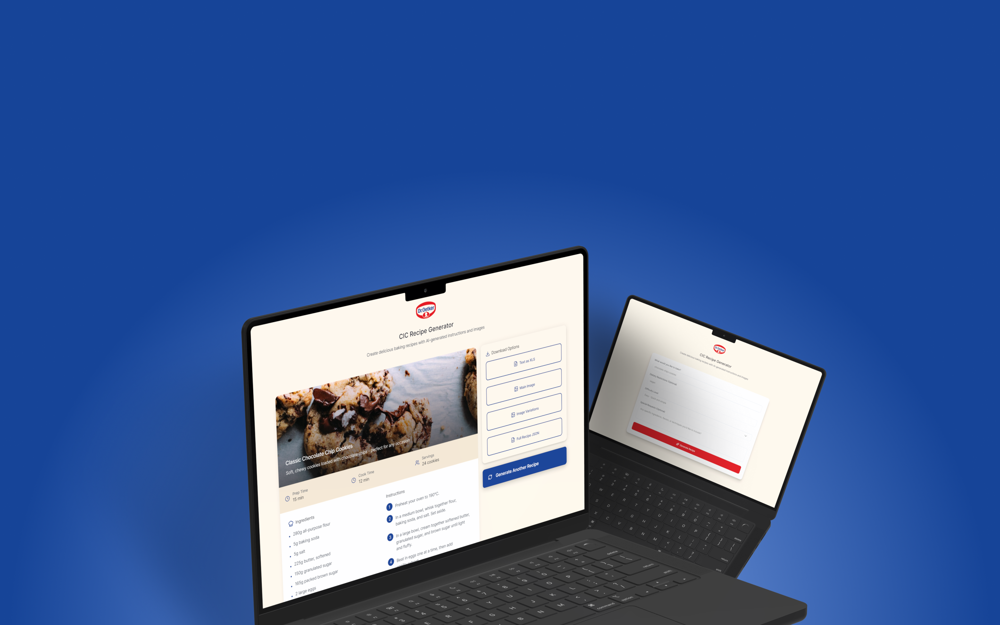
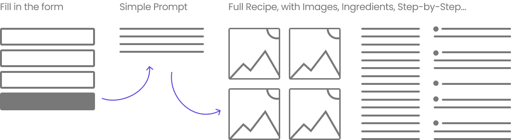

As the sole designer on this project, I owned the full process — from market research and opportunity definition through to workflow design and delivery.
My role was to research, design, and define the end-to-end workflow used to feed and guide the AI. I conducted market research to understand existing solutions, emerging tools, and industry best practices, helping identify where AI could deliver the most value and differentiation.
Based on these insights, I designed a structured prompting system that first generates high-quality Midjourney prompts directly in ChatGPT, ensuring consistent, modern visuals. The workflow includes clear instructions on image style, camera setup, lighting, composition, and overall aesthetic, as well as guidelines for how images should be exported and delivered.
This ensured that every AI-generated asset met brand and production standards while remaining fast, scalable, and easy to reuse across multiple content formats.

Traditional Process – weeks, thousands of euros
CIC Process – minutes, fraction of the cost
Generating a full recipe takes nothing more than filling in a simple form. We deliberately kept the input minimal — the AI handles the complexity.
Every asset needed is ready to download in multiple formats. We later extended this with a direct upload feature, allowing content managers to publish straight from CIC to their own platform — cutting the production pipeline even further.
2
Active Markets
Austria and Canada
2+
Use Cases Beyond Recipes
Expanded to blog & editorial content
5–15h
Saved per Recipe
Compared to the traditional cycle
5+
Markets in Pipeline
Pending legal review